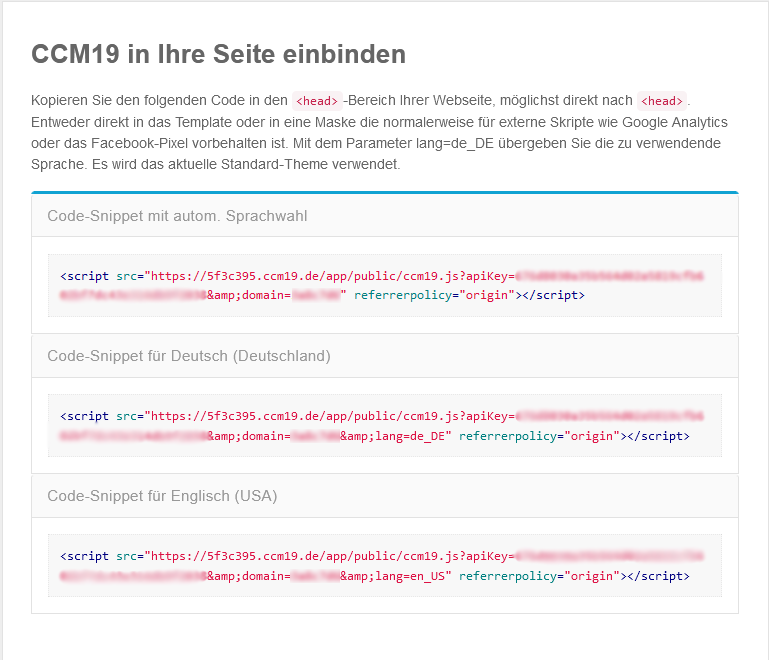
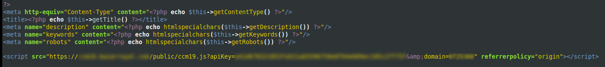

Um unseren Cookie Consent Manager für Ihre Magento-Seite zu installieren, führen Sie einfach die folgenden Schritte aus:
Nach der erfolgreichen Installation von CCM19 auf Ihrem Server bzw. der Einrichtung bekommen Sie einen Javascript-Code.

Leider gibt es bei Magento keine gute Möglichkeit, dass Script von CCM19 weit genug oben im Kopf der Seite einzubauen, wodurch Sie das Template hierfür bearbeiten müssen.
Bearbeiten Sie in Ihrer Magento Installation, die Datei `/app/design/frontend/rwd/default/template/page/html/head.phtml und tragen Sie das Javascript von CCM19 ein. (Sollte sich die Datei dort nicht finden, benutzen Sie ein anderes Teheme als das standardmäßife "rwd" Theme)

Nun speichern Sie diese Änderung einfach und leeren den Cache Ihrer Magento Seite.
Damit ist die Einrichtung abgeschlossen und CCM19 sollte nun in Ihrer Seite aktiv sein.